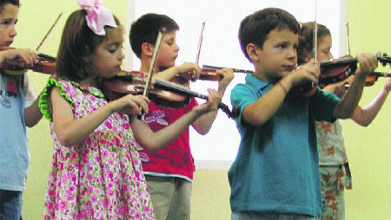
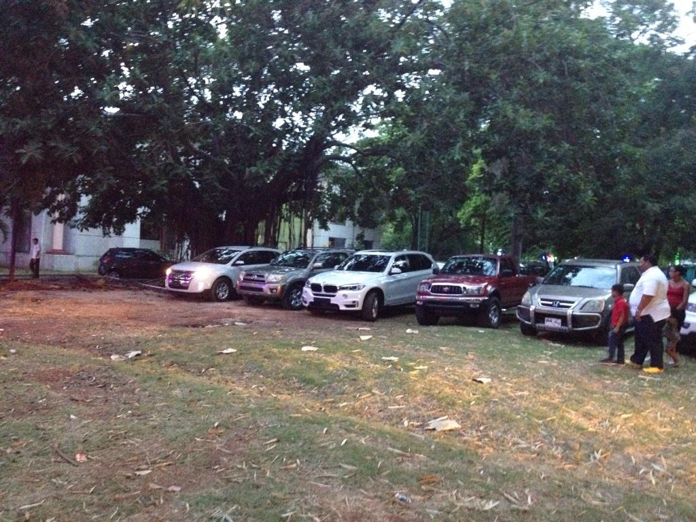

Entre los servicios destacados que ofrecemos se encuentran:
ECO GUARDERÍA
Nuestra guardería es un ambiente de afecto, atención y cuidado para los niños. Contamos con distintas actividades, servicios, personal especializado e instalaciones funcionales. Nuestro objetivo es brindar siempre la mejor calidad y propuestas innovadoras. Por ello, a partir de septiembre de 2018, la guardería es aún más sostenible. Contamos con distintas iniciativas ecológicas y, además, todos los meses ofreceremos obsequios sotenibles!
COMEDOR
Contamos con menús variados, diseñados y avalados por nutricionistas infantiles. El menú se pone a disposición de las familias de manera mensual para así poder organizar las cenas y llevar un nivel de alimentación adecuado a la edad.
El momento de la comida se aprovecha además para potenciar hábitos ligados a la alimentación y fomentar su autonomía, por medio de una serie de pautas como:
· Animarle a comer solo/a
· Utilizar los útiles de forma adecuada
· Lavarse los dientes después de las comidas
· Permanecer sentado/a a la mesa hasta haber acabado, etc.
INFORMACIÓN INDIVIDUALIZADA DIARIA
La comunicación entre el centro y las familias es fundamental para que haya una cohesión entre las rutinas de casa y los hábitos de la guardería. Por ello trabajamos con una agenda de comunicación diaria donde se recibe una información individualizada del día a día de los alumnos y alumnas.
PSICOMOTRICIDAD
Centrada en el desarrollo de las habilidades motrices que ayudan a descubrir, conocer y controlar gradualmente el propio cuerpo, provocando que el niño actúe progresivamente más autínoma. Estas actividades son un instrumento válido para observar y explorar el entorno inmediato, así como para representar y evocar diferentes aspectos de la realidad vividos. Además, ayudan a utilizar el lenguaje de forma ajustada y a enriquecer y diversificar las posibilidades expresivas del niño, así como a desarrollar su capacidad de socialización.
INGLÉS
Dada la importancia de iniciarse en una segunda lengua, y teniendo en cuenta que los primeros años de vida son decisivos para su adquisición, en el Espacio Infantil del Palacio contamos con una educadora bilingüe que actuará como referente de la lengua inglesa y que hará que los más pequeños vayan familiarizándose con este idioma.
MÚSICA
La música es una parte fundamental en el desarrollo cognitivo del niño, y por ello, en el Espacio Infantil del Palacio concedemos especial importancia a este aspecto, formando parte de muchos momentos del día, como la realización de talleres de audición o discriminación de sonidos, o simplemente utilizándola en momentos de relajación o de juego.
ESCUELA DE PADRES
En la educación de los más pequeños es fundamental el papel de los padres, pues éstos, junto con la educadora, son los referentes educativos del niño; por este motivo desde el Espacio Infantil pretendemos ayudaros a resolver todas las dudas que se os puedan presentar. Para ello, realizaremos mensualmente actividades familiares que permitan mejorar la conexión familia-centro. En ellas podremos ver la manera de desenvolverse y relacionarse de los pequeños y será la ocasión idónea para resolver cualquier duda que pueda surgir.
EXPERIMENTACIONES
En los últimos tiempos las formas de educación están variando, dando paso a actividades más vivenciadas. Por eso, en nuestro centro, realizaremos semanalmente sesiones de experimentación, facilitando a los alumnos diferentes materiales y actividades que les permitan disfrutar libremente y relacionarse con el medio y los distintos elementos de manera libre y según su intuición les marque.
PARKING
Contamos con aparcamiento propio gratuito para todos nuestros clientes.